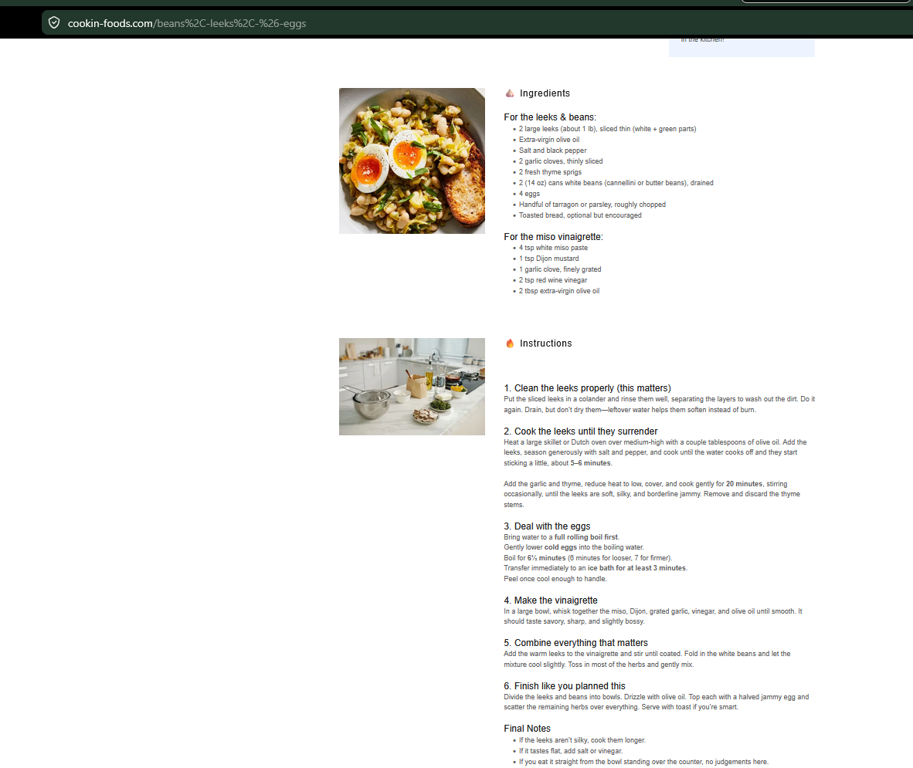

Meals
Beans, Leeks & Eggs
Soft leeks and white beans with jammy eggs and miso vinaigrette.
Ingredients
Leeks and Beans
- 2 large leeks, sliced
- Extra-virgin olive oil
- Salt and black pepper
- 2 garlic cloves, thinly sliced
- 2 fresh thyme sprigs
- 2 cans white beans, drained
- 4 eggs
- Tarragon or parsley, chopped
- Toast
Miso Vinaigrette
- 4 tsp white miso paste
- 1 tsp Dijon mustard
- 1 garlic clove, grated
- 2 tsp red wine vinegar
- 2 tbsp extra-virgin olive oil
Instructions
1
Clean leeks
Rinse sliced leeks thoroughly, separating layers to remove dirt. Drain well.
2
Cook leeks
Cook leeks in olive oil with salt and pepper until soft and jammy, about 20 minutes. Add garlic and thyme near the end.
3
Cook eggs
Boil eggs 6 minutes for softer centers or 7 for firmer. Transfer to ice bath and peel.
4
Make vinaigrette
Whisk miso, Dijon, garlic, vinegar, and olive oil until smooth.
5
Combine
Fold beans into leeks until warm. Divide into bowls.
6
Serve
Top with halved eggs, herbs, vinaigrette, and toast.
Notes
- If the leeks are still silky, cook them longer.